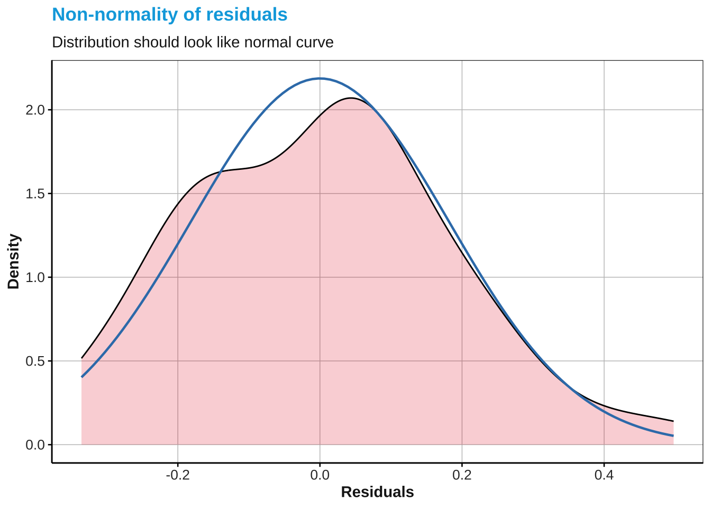

Lesson 6: Multiple Linear Regression Assumptions
24th/26th May, 2023
1 Short summary
1.1 Last time
n_distinct(): e.g., you can use it within the summarize function to count number of participants avoiding repeated rows.rowwise(): row-wise computations - always to be combined withungroup()mutate(across(c()))mutate(c_across())plot_likert()log(): log-transform continuous variablesdrop1(,test = "Chisq"): model selectiontab_model(): display nice model table for knitted html/pdf documents
1.2 Today
- Assumptions of a linear regression model: Last week’s mistake!
- Multiple
lm– again! 😃 - New functions:
report::reportplot_model(name_model, type = "diag")
2 Homework
2.1 Exercise 1:
Create a grid with two plot_likerts, one should show English use at school (hence use the variables speak_school, list_school, write_school and read_school) and the other should display participants’ use of EN in daily life (hence use the variables speak_daily, list_daily, write_daily and read_daily)
### solution
### step 1: create smaller df
df.homework %>% select(speak_school:write_school) -> en.use.school
en.use.school %>%
mutate_all(~case_when(
. == 0 ~ 0,
. == 0.25 ~ 1,
. == 0.5 ~ 2,
. == 0.75 ~ 3,
. == 1~4
)) -> en.use.school
df.homework %>% select(speak_daily:write_daily) -> en.use.daily
en.use.daily %>%
mutate_all(~case_when(
. == 0 ~ 0,
. == 0.25 ~ 1,
. == 0.5 ~ 2,
. == 0.75 ~ 3,
. == 1~4
)) -> en.use.daily
ggarrange(
# plot likert showing EN use at school
plot_likert(en.use.school,
catcount = 5,
legend.labels = c("100% IT", "25% EN, 75% IT", "50% EN, 50% IT", "75% EN, 25% IT", "100% EN"),
title = "EN use at school",
axis.labels = c("Speaking", "Understanding", "Reading", "Writing"),
geom.colors = "RdBu",
# values = "sum.inside",
reverse.scale = T, show.n = T),
# plot likert showing EN outside school
plot_likert(en.use.daily,
catcount = 5,
legend.labels = c("100% IT", "25% EN, 75% IT", "50% EN, 50% IT", "75% EN, 25% IT", "100% EN"),
title = "EN use at school",
axis.labels = c("Speaking", "Understanding", "Reading", "Writing"),
geom.colors = "RdBu",
# values = "sum.inside",
reverse.scale = T, show.n = T),
common.legend = T,
nrow = 2,
legend = "right"
)2.2 Exercise 2:
Create a composite measure of English proficiency (subjective) by computing the mean of the variables speaking, reading, understanding and writing, then create a boxplot showing the differences between dyslexics and non-dyslexics
# solution
df.homework %>%
# operate row-wise
rowwise() %>%
mutate(eng.prof = mean(c_across(speaking:writing))) %>%
ungroup() %>%
# plot
ggplot(aes(x = diagnosis, y = eng.prof, fill = diagnosis)) + geom_boxplot(alpha = .5) + ggtitle(" EN proficiency by group (TD vs. DYS) ")3 Assumptions of a linear regression
Linearity: The relationship between each independent variable and the dependent variable is assumed to be
Independence: The observations or data points used in the regression analysis should be independent of each other.
Constant variance: The variance of the error terms (residuals) should be constant across all levels of the independent variables.
Normality: The error terms (residuals) are assumed to follow a normal distribution.
No multicollinearity: This assumption is crucial in multiple linear regression. It states that the independent variables should not be highly correlated with each other. High multicollinearity can cause instability in the estimates of the regression coefficients and affect the interpretation of the model.
3.0.1 What went wrong last week?
The df we were using had multiple observations for the same participants
read_csv("week_five.csv") -> df
nrow(df) # 4,480 rows [1] 4480length(unique(df$ID)) # we should have 56 rows instead [1] 563.0.2 IMPORTANT STEP
Reduce the data frame by retaining only one observation per participant: This has to be done here because all the variables included in the model remain constant across all rows for each participant. In this case, the assumption of independence would be violated.
df %>%
# reduce to 1 observation per participant
filter(trial_number == 1) %>% # 56
# mutate cht to fct
mutate_if(is.character, as.factor) %>%
# scale IV
mutate(
age = scale(age), age = as.double(age),
AoO = scale(AoO), AoO = as.double(AoO),
reading = scale(reading), reading = as.double(reading),
eng.use = scale(eng.use), eng.use = as.double(eng.use),
read.en = scale(read.en), read.en = as.double(read.en),
# log transform RT
mean.rt = log(mean.rt)) -> df.modelCompare output of model with reduced data frame with output of model with bigger data frame:
3.1 Hypothesis 1:
RT is predicted by:
- Diagnosis
- age
- AoO
- Reading exposure (not in the model now)
- Reading proficiency
- EN use
# last week's model
df %>%
lm(formula = mean.rt ~
diagnosis +
age +
AoO +
reading +
eng.use +
read.en
) -> m1
summary(m1)
Call:
lm(formula = mean.rt ~ diagnosis + age + AoO + reading + eng.use +
read.en, data = .)
Residuals:
Min 1Q Median 3Q Max
-5994.5 -2137.9 -212.6 1408.5 9682.3
Coefficients:
Estimate Std. Error t value Pr(>|t|)
(Intercept) 37708.16 725.02 52.010 < 2e-16 ***
diagnosisYES 4439.09 122.11 36.353 < 2e-16 ***
age -1005.67 36.50 -27.554 < 2e-16 ***
AoO -142.32 50.98 -2.792 0.00527 **
reading -744.86 58.72 -12.686 < 2e-16 ***
eng.use -8681.80 523.19 -16.594 < 2e-16 ***
read.en -157.40 77.85 -2.022 0.04326 *
---
Signif. codes: 0 '***' 0.001 '**' 0.01 '*' 0.05 '.' 0.1 ' ' 1
Residual standard error: 3214 on 4473 degrees of freedom
Multiple R-squared: 0.4131, Adjusted R-squared: 0.4123
F-statistic: 524.7 on 6 and 4473 DF, p-value: < 2.2e-16# Model with reduced data frame
df.model %>%
lm(formula = mean.rt ~
diagnosis +
age +
AoO +
reading +
eng.use +
read.en
) -> m1a
summary(m1a)
Call:
lm(formula = mean.rt ~ diagnosis + age + AoO + reading + eng.use +
read.en, data = .)
Residuals:
Min 1Q Median 3Q Max
-0.33564 -0.15389 0.01616 0.10086 0.49785
Coefficients:
Estimate Std. Error t value Pr(>|t|)
(Intercept) 9.553761 0.029990 318.563 < 2e-16 ***
diagnosisYES 0.246438 0.065679 3.752 0.000465 ***
age -0.084250 0.028115 -2.997 0.004276 **
AoO -0.003918 0.027167 -0.144 0.885909
reading -0.036885 0.029328 -1.258 0.214460
eng.use -0.051237 0.027906 -1.836 0.072422 .
read.en -0.006821 0.028437 -0.240 0.811439
---
Signif. codes: 0 '***' 0.001 '**' 0.01 '*' 0.05 '.' 0.1 ' ' 1
Residual standard error: 0.1933 on 49 degrees of freedom
Multiple R-squared: 0.4171, Adjusted R-squared: 0.3458
F-statistic: 5.844 on 6 and 49 DF, p-value: 0.0001184# Check residuals of m1 and m1a
plot_model(m1, type = "diag")[[1]]
[[2]]
[[3]]
[[4]]plot_model(m1a, type = "diag")[[1]]
[[2]]
[[3]]
[[4]]# model selection of m1a with drop1
df.model %>%
lm(formula = mean.rt ~
diagnosis +
age +
AoO +
reading +
eng.use +
read.en
) -> m1a
## Test model
drop1(m1a, test = "Chisq")Single term deletions
Model:
mean.rt ~ diagnosis + age + AoO + reading + eng.use + read.en
Df Sum of Sq RSS AIC Pr(>Chi)
<none> 1.8301 -177.58
diagnosis 1 0.52582 2.3559 -165.43 0.0001694 ***
age 1 0.33538 2.1655 -170.15 0.0021426 **
AoO 1 0.00078 1.8309 -179.55 0.8774721
reading 1 0.05908 1.8892 -177.80 0.1822445
eng.use 1 0.12590 1.9560 -175.85 0.0535747 .
read.en 1 0.00215 1.8322 -179.51 0.7976838
---
Signif. codes: 0 '***' 0.001 '**' 0.01 '*' 0.05 '.' 0.1 ' ' 1## Model output
summary(m1a)
Call:
lm(formula = mean.rt ~ diagnosis + age + AoO + reading + eng.use +
read.en, data = .)
Residuals:
Min 1Q Median 3Q Max
-0.33564 -0.15389 0.01616 0.10086 0.49785
Coefficients:
Estimate Std. Error t value Pr(>|t|)
(Intercept) 9.553761 0.029990 318.563 < 2e-16 ***
diagnosisYES 0.246438 0.065679 3.752 0.000465 ***
age -0.084250 0.028115 -2.997 0.004276 **
AoO -0.003918 0.027167 -0.144 0.885909
reading -0.036885 0.029328 -1.258 0.214460
eng.use -0.051237 0.027906 -1.836 0.072422 .
read.en -0.006821 0.028437 -0.240 0.811439
---
Signif. codes: 0 '***' 0.001 '**' 0.01 '*' 0.05 '.' 0.1 ' ' 1
Residual standard error: 0.1933 on 49 degrees of freedom
Multiple R-squared: 0.4171, Adjusted R-squared: 0.3458
F-statistic: 5.844 on 6 and 49 DF, p-value: 0.0001184# syntax
plot_model(model.name, type = "diag")
vif(model.name)plot_model(model_name, type = "diag"): Checks model assumptions
# check plot model "diag"vif: computes the VIF values by regressing each independent variable against the other independent variables in the model
# check vif VIF = 1: indicates no multicollinearity, meaning there is no correlation between the independent variable and other independent variables in the model
VIF between 1 and 5 are generally considered acceptable, indicating low to moderate multicollinearity
VIF values above 5 or 10 (depending on the field) are often considered high, suggesting the presence of multicollinearity.
# plot model 3.1.1 Report model
# syntax
report::report(model.name)# report 3.2 Hypothesis 2
df.model %>%
lm(formula = accuracy_tot ~
age +
AoO +
reading +
diagnosis +
eng.use +
read.en
) -> m2
## Model selection
#drop1(m2, test = "Chisq")
## Model output
#summary(m2)# check assumptions # plot model # report model